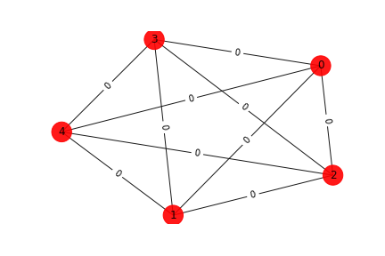
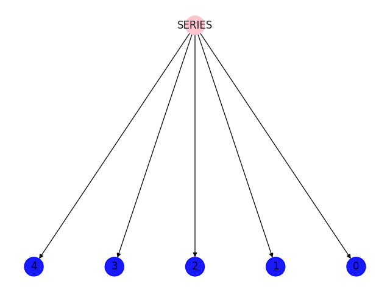
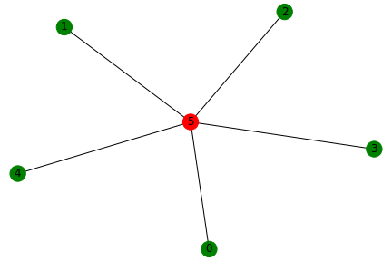
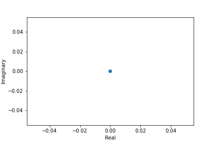
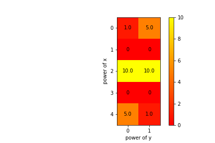
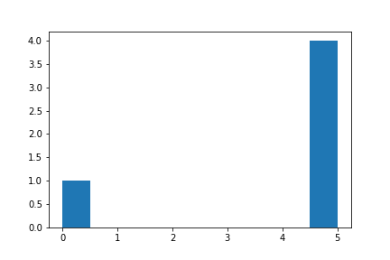
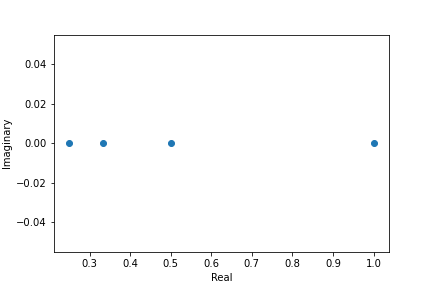

Gauss Graph
Prev
Next
Graph

Number of words associated with this graph: 1
Decompositions
Modular Decomposition

Split Decomposition

Labels of the bags: {5: 'complete5'}
Interlace Poynomials
Interlace Polynomial
Polynomial: Poly(16*x, x, domain='ZZ')
Roots: [0.]

Interlace Polynomial Two Var
Polynomial: Poly(x**4*y + 5*x**4 + 10*x**2*y + 10*x**2 + 5*y + 1, x, y, domain='ZZ')
Coefficients heat map:

Other Polynomials
Characteristic Polynomial
polynomial: x**5 - 20*x**4 + 150*x**3 - 500*x**2 + 625*x
factorization: x*(x - 5)**4
roots:

Chromatic Polynomial
polynomial: x^5 - 10*x^4 + 35*x^3 - 50*x^2 + 24*x

Prev
Next